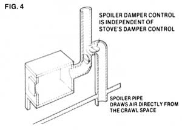

A fire can be held overnight in any reasonably tight. This fire is just taking off after lying dormant for more than eight hours. Smoke is rising and there are brilliant, hot coals under the logs on the right. The somewhat leaky door had been sealed all night with a foil closure pad.